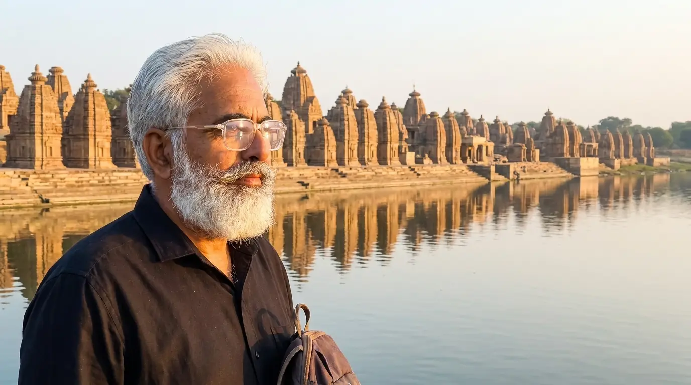

Closest: Fatehpur Sikri and Firozabad, about 40 km
For temples: Mathura, Vrindavan, Govardhan, Bateshwar
For nature: Bharatpur bird sanctuary, about 55 km
For forts: Fatehpur Sikri and Gwalior
Cab fares: from ₹2,500 for a day trip in an AC sedan
Agra has more around it than most visitors expect. Within two or three hours there are Mughal ruins, Krishna's birthplace, a famous bird sanctuary and a hill fort. This list has only the places we drive to regularly, so the distances and fares are real.
Padma Shree Travels runs all of these day trips from Agra in AC cabs at fixed fares. Tell us the place and date on WhatsApp +91 87200 81102.
| Place | From Agra | Drive time | AC sedan fare |
|---|---|---|---|
| Fatehpur Sikri | ~40 km | about 1 hr | ₹2,500 |
| Firozabad | ~40 km | about 1 hr | ₹2,500 round trip |
| Bharatpur | ~55 km | 1–1.5 hrs | On WhatsApp |
| Mathura | 58–62 km | about 1 hr 15 min | ₹3,000 round trip |
| Vrindavan | 70–75 km | about 2 hrs | ₹3,000 round trip, with Mathura |
| Bateshwar | ~70 km | 1.5–2 hrs | ₹3,000 round trip |
| Govardhan | 85–95 km | about 2 hrs | On WhatsApp |
| Gwalior | ~120 km | 2.5–3 hrs | ₹3,000 round trip |
Fares are for an AC sedan. Tolls, parking and entry tickets are extra at actuals. Ertiga and Innova fares are on each route page.
Akbar built this red sandstone city as his capital and left it a few years later. Buland Darwaza, the Jama Masjid and the palace courtyards are still in fine shape. It needs 2 to 3 hours and works as a half-day trip. If you choose only one place from this list, choose this one.
The birthplace of Krishna. Most visitors see Krishna Janmabhoomi and Dwarkadhish temple, then go down to Vishram Ghat on the Yamuna. Temples close for a few hours in the afternoon, so start early.
Banke Bihari, Prem Mandir and ISKCON are the temples most people come for. Vrindavan is 15 minutes from Mathura, so the two are usually done together in one day. Our one-day Mathura Vrindavan plan has the hour-by-hour order.
A wetland bird sanctuary and UNESCO site, at its best from October to February. You go around by cycle-rickshaw in the early morning. Read the Bharatpur day trip guide.
The quiet one. More than 100 old Shiva temples stand in a row on the bank of the Yamuna, and on most days there are very few tourists. It is flat, easy for elders, and done by early afternoon.
The sacred hill of Braj. Pilgrims come to walk the 21 km Parikrama around it, and others come for darshan at Daan Ghati and Radha Kund. See the Govardhan Parikrama guide.
The farthest on this list, and worth the drive for the hilltop Gwalior Fort and Jai Vilas Palace. Leave by 7:00 AM and you are back in Agra by evening.
India's glass and bangle town. It is a working market, not a monument stop. It suits shoppers and anyone curious about how glass bangles are made.
Fatehpur Sikri and Bharatpur are on the same road. Mathura and Vrindavan are next to each other. Both pairs fit in one day without rushing. Other pairs mean too much driving.
Tell us the place, date and number of passengers on WhatsApp. You get one fixed fare in writing, and the driver's name, number and car number before pickup. The driver waits at every stop. No advance payment is needed for most bookings. See every route on our outstation cabs from Agra page or the fare list.
The best places to visit near Agra are Fatehpur Sikri (about 40 km), Bharatpur bird sanctuary (about 55 km), Mathura (about 60 km), Vrindavan (about 70 km), Bateshwar (about 70 km), Govardhan (about 90 km) and Gwalior (about 120 km). All can be done as day trips by road.
Fatehpur Sikri is the best half-day trip from Agra. It is about 40 km away, takes about an hour to reach, and needs 2 to 3 hours to see. Bateshwar is a quieter half-day option about 70 km away.
Mathura is 58 to 62 km from Agra, about 1 hour 15 minutes by road. Vrindavan is 70 to 75 km from Agra, about 2 hours. The two towns are close to each other and are usually visited together in one day.
In an AC sedan, Fatehpur Sikri is ₹2,500, and Mathura, Bateshwar and Gwalior are ₹3,000 for the round trip. Fares for Bharatpur and Govardhan are confirmed on WhatsApp. Tolls, parking and entry tickets are extra at actuals.
Yes, if they are on the same road. Fatehpur Sikri and Bharatpur fit in one day, and so do Mathura and Vrindavan. Other combinations involve too much driving for a comfortable day.
Fixed fare in writing · Driver waits at every stop · Driver details before pickup